ANILA 管理員手冊
給平台管理員（擁有者／管理員角色） · 平台版本 v1.0.1 · 2026-09-02
1上線第一天：六件必做，順序不能錯
平台裝好、所有容器都綠，不代表同仁進得來、問得出東西。下面六件漏掉任何一件，症狀都出現在「同仁開始用」那一刻，而且畫面不會告訴他們該找誰。
| # | 做什麼 | 在哪裡 | 漏掉的症狀 |
|---|---|---|---|
| 1 | 建立單位 | 治理中心 → 部門（第 3 節） | 同仁刷卡後要選單位，下拉是空的，全部卡在註冊。 |
| 2 | 確認自己進得來 | 刷卡登入；擁有者員編在部署時已設定 | 沒有人能核准任何人。 |
| 3 | 確認模型可用 | 治理中心 → 模型（第 5 節） | 登入成功但問不出東西。 |
| 4 | 指定一顆 LLM 為主路由 | 模型 → 該列「設為主要」 | 第一個問題就回「無可用主路由模型」。 |
| 5 | 把規章知識庫標成「ANILA 可檢索」 | 治理中心 → 知識庫（第 6 節） | 規章問答整個不存在，畫面看起來正常，模型憑印象編條號。 |
| 6 | 安排一個人固定看「待審核」 | 治理中心 → 使用者（第 4 節） | 同仁註冊後靜止在「等待核准」，收不到任何通知。 |
順序是 1 → 2 → 3 → 4 → 5，然後才請同仁開始刷卡。擁有者進場不需要單位存在，所以先進來再建單位是通的；反過來就卡住。
2治理中心怎麼進、怎麼看
治理中心是平台的管理介面，網址是平台根目錄（同仁的對話介面在 /anila/）。只有管理員與擁有者角色看得到；一般同仁登入後會被導到對話介面。

| 區塊 | 看什麼 |
|---|---|
| 上方四格 | 近 24 小時請求數、token、使用中的模型與金鑰。剛上線都是 0，正常。 |
| 用量圖 | 依模型分的請求量。第一筆請求後才有線。 |
| 服務健康 | 控制平面、資料庫、佇列、反向代理、對話路由、文件匯入、簡報產生、簡報渲染。任何一個紅，先看第 16 節。 |
| 告警 | 待處理的告警數。點「前往警報中心」處理。 |
| 右上「深色／淺色」 | 只影響你自己的畫面。 |
左側選單分三組：主要（儀表板、API 金鑰、模型、用量）、開發者（開發指南、Agent、知識庫、自訂動作）、管理（使用者、部門、警報、回饋、公告、稽核、盤點、平台連結、服務存取、服務客戶端、信任主機、平台設定）。
3單位
治理中心 → 部門。單位是帳號的必填欄位：同仁完成註冊時一定要選一個，所以單位必須先存在。建議一開始就把單位建齊，而不是等人來申請再建。

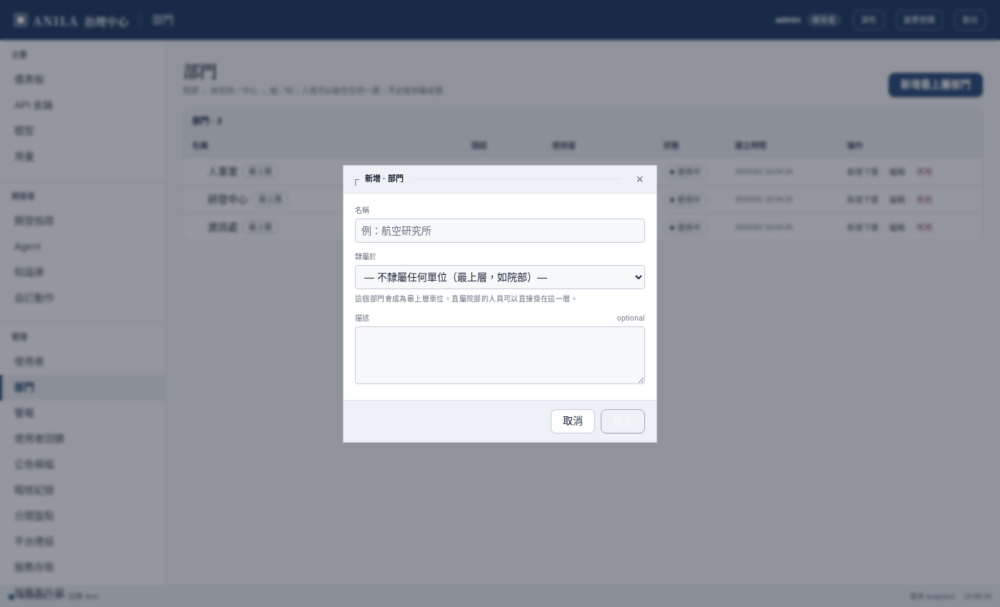
- 停用不會刪資料：該單位的人仍在，只是新人選不到它。
- 單位名稱直接顯示給同仁選，用正式名稱。
4帳號與核准
同仁怎麼進來
- 插自然人憑證卡 → 平台驗章 → 建立一個待審核帳號
- 同仁選擇所屬單位並送出
- 管理員核准 → 同仁再刷一次卡就能使用
「等待核准」對同仁是完全靜止的畫面。他看不到排在第幾個、也收不到通知。所以核准這件事要有人固定看，尤其是分批放行的那幾週。
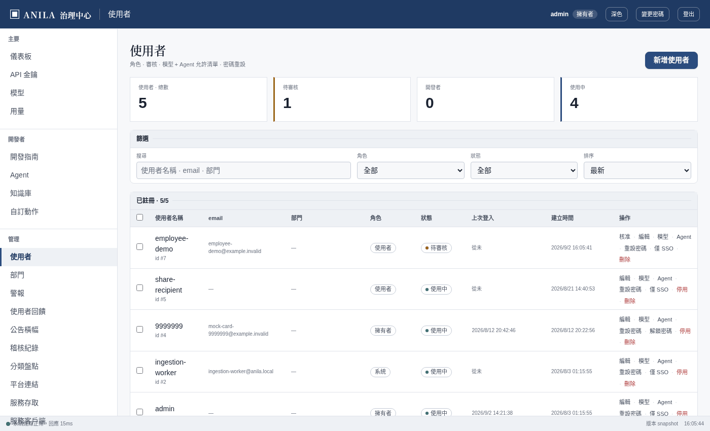
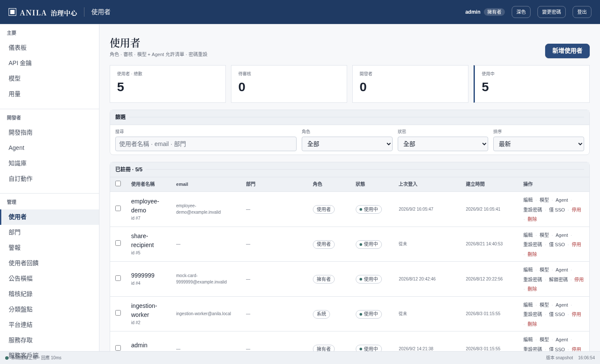
每一列的操作
| 操作 | 做什麼 |
|---|---|
| 核准 | 只在待審核帳號出現。核准後立即生效。 |
| 編輯 | 改角色（使用者／開發者／管理員／擁有者）、單位、顯示名稱。 |
| 模型／Agent | 這個人可以用哪些模型、哪些 agent（允許清單）。空白＝全部可用。 |
| 重設密碼 | 只對帳密帳號有意義（例如破窗用的擁有者帳號）。卡登同仁不需要密碼。 |
| 僅 SSO | 鎖住帳密登入，只能用卡或 SSO。 |
| 停用 | 離職或調離時用。帳號與紀錄都留著，只是進不來。 |
| 刪除 | 真的刪。稽核紀錄會留，但帳號與偏好不會。一般用停用就好。 |
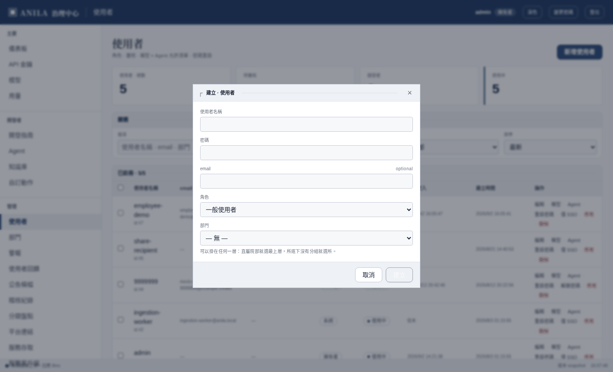
角色
| 角色 | 能做什麼 |
|---|---|
| 使用者 | 用對話介面。看不到治理中心。 |
| 開發者 | 加上：註冊 agent、建知識庫、看開發指南。 |
| 管理員 | 加上：核准帳號、單位、模型、公告、稽核。 |
| 擁有者 | 全部，包含平台設定、信任主機、服務客戶端、指派誰能改模型端點。 |
5模型與主路由
治理中心 → 模型。這裡登記平台可以呼叫的模型端點：LLM、嵌入（embedding）、視覺、語音等。

主路由一定要指定。 部署腳本會把模型登記進來，但不會幫你選主路由。沒有主路由，同仁的第一個問題就回「ANILA Router 無可用主路由模型」。找一顆 LLM，按該列的「設為主要」。模型主機下架了那顆模型也會變成這樣，症狀是回答「LLM 暫時無法回應」。
| 操作 | 做什麼 |
|---|---|
| 探測／測試連線 | 立刻打一次端點看通不通。平常每 60 秒自動檢查一次。 |
| 設為主要 | LLM 設為主路由；嵌入模型設為主嵌入（規章檢索用它）。 |
| 停用 | 「停用」真的等於「系統不會再用它」，包含背景服務。 |
| 清除 | 從登記中移除。 |
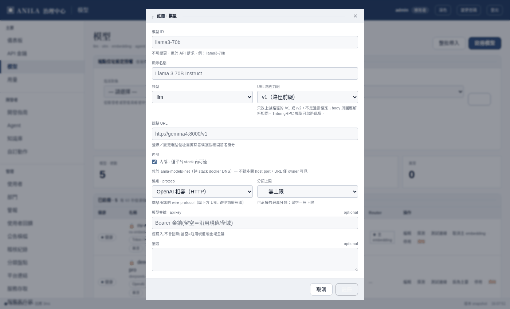
- 模型 ID 要跟模型主機上的名稱一字不差（含大小寫），這是最常填錯的欄位。
- 「內部」勾選框講的是網路可達性，不是信任等級；它決定追蹤畫面要不要顯示端點位址。
- 分類上限：這顆模型最高可以處理到哪個密等。留空＝無上限。
- 端點位址誰能改：預設只有擁有者。頁面最上方的「端點位址設定授權」可以指派特定開發者或管理員。
- 端點位址會經過出向檢查：私網 IP 或單一名稱的主機要先加進「信任主機」（第 15 節），否則登記時被拒。
6院內規章知識庫
治理中心 → 知識庫。全院共用的知識庫在這裡建、在這裡上架文件。

只有標了「ANILA 可檢索」的知識庫會被同仁的提問自動查詢；新建的知識庫預設沒有標。 沒標的時候，規章問答整個不存在，而且畫面看起來正常：答案上方只會寫「本次未檢索院內規章」，然後模型憑印象編條號。標之前平台會檢查該知識庫的密等，有密等的不能對全院開放搜尋。
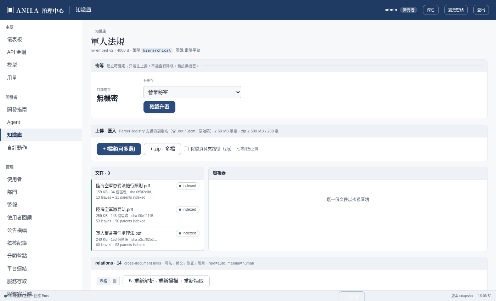
- 上傳：單檔或 zip 多檔，每檔 50 MB 內。上傳後背景處理，狀態從處理中變 indexed 才查得到。
- 掃描檔（純圖片 PDF）內容不完整，上架前確認有文字層。
- 檔名會直接顯示在同仁的來源清單裡。
掃描檔.pdf上架之後就再也找不到了；用差勤管理辦法-1140301修正.pdf這種名字。 - 密等只能升不能降。建立時想清楚。
- 文件之間的關聯（母法、施行細則、修正）平台會自動抓，也可以手動加。
7Agent（同仁掛上來的助手）
治理中心 → Agent。同仁可以把自己寫的 agent 掛上平台：他註冊 → 你核准 → 其他人才看得到。
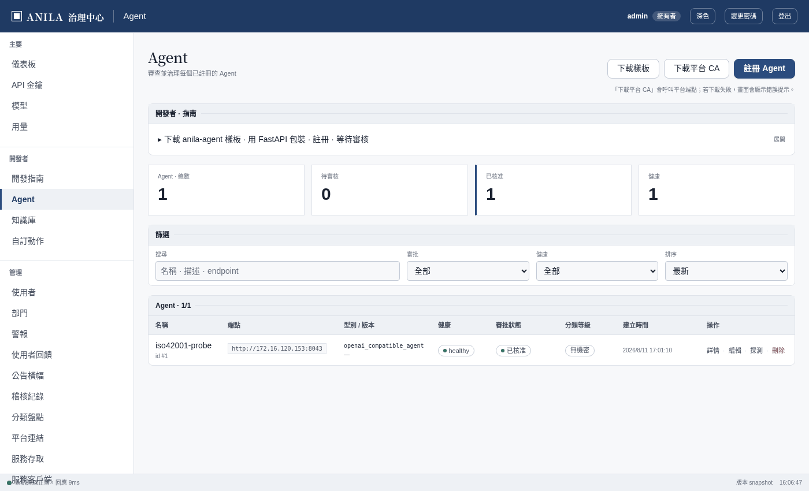
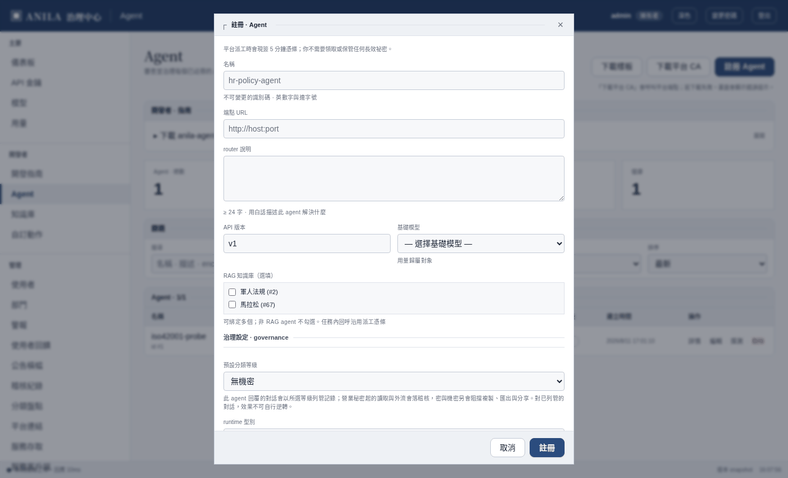
核准前確認兩件事：
- 那個網址指到哪裡。 agent 的端點是註冊者自己填的，平台會把使用者的問題送過去。
- 它有沒有透過平台呼叫模型。 院內規矩是 agent 內部要用模型必須經由平台（用量才有歸屬、才有稽核）。
使用者的長期記憶不會送給 agent，這是平台強制的。agent 的預設分類等級會決定使用它的對話被列管到哪一級，等級只升不降。
「開發指南」頁是給要寫 agent 的同仁看的說明，內容由平台內建，不用維護。
8自訂動作
治理中心 → 自訂動作。這裡定義同仁在答案下方可以按的額外動作（例如「翻成英文」「改成公文語氣」），本質是一段固定的提示詞。
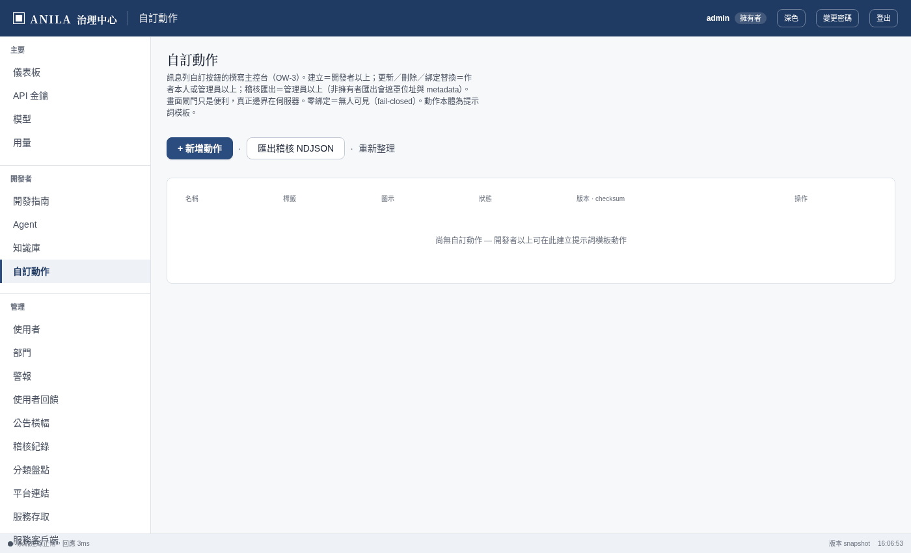
每個使用者每分鐘可觸發的次數有上限（平台設定 limits.action_invoke_per_min，預設 20）。
9平台設定（只有 15 顆）
治理中心 → 平台設定。全部改完立刻生效，沒有「需要重啟」的項目。
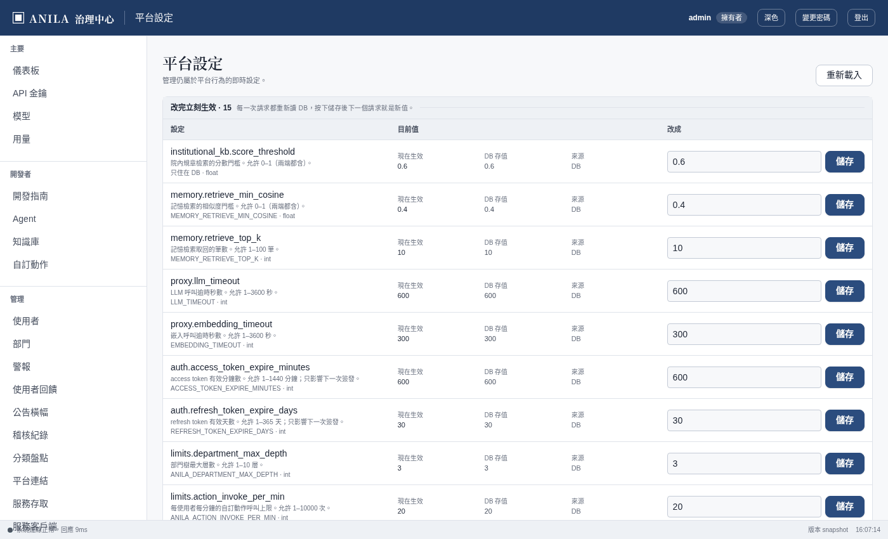
設定頁刻意只有 15 顆。 能從網頁動到的安全開關，就是一個等著被動的安全開關。要新增一顆設定前先答這個問題：上線之後，誰、在什麼情境、為什麼不能等下一次改版？答不出來就不該是設定。
| 設定 | 意思 | 什麼時候動 |
|---|---|---|
| 院內規章檢索門檻 | 相似度低於這個值的條文不採用。太高查不到、太低撈到不相關。 | 換嵌入模型後要重新量。這是最常動的一顆。 |
| 記憶檢索門檻／筆數 | 長期記憶帶進對話的門檻與上限。 | 同仁反映「它一直提到不相關的舊事」時調高門檻。 |
| 模型／嵌入呼叫逾時 | 等模型多久算失敗。 | 模型主機慢的時候。 |
| 登入有效時間、換發天數 | 登入多久要重新刷卡。 | 資安要求變更時。只影響下一次登入。 |
| 單位最大層數 | 部門樹可以幾層。 | 組織需要更多層時。 |
| 自訂動作每分鐘上限 | 第 8 節。 | 被濫用時。 |
| 附件占用比例 | 附件最多吃掉多少模型上下文。 | 同仁附大檔常失敗時調高。 |
| 簡繁正規化、查詢擴展 | 把模型輸出的簡體轉繁體；問句自動加同義詞。 | 幾乎不用動。 |
| Router 的三份提示詞 | 派工模板／直答模板／強制自答模板的全文。 | 要改平台「說話方式」時。改壞了按「重設為出貨預設」。派工模板必須保留 {agent_list}。 |
每一次修改都留稽核紀錄（含改前全文）。
10公告橫幅
治理中心 → 公告橫幅。張貼維護、資安、規範公告，顯示在所有同仁的對話介面頂部；勾「同時顯示在登入頁」的話，還沒登入也看得到。
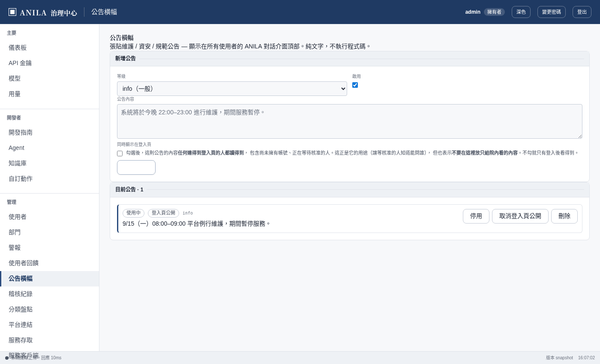
- 等級影響顏色：一般／注意／重要。
- 同仁關掉一則後，那一則不會再出現；新的一則會。
- 過期的公告記得停用或刪除，橫幅一直掛著大家就不看了。
11用量、稽核紀錄、警報
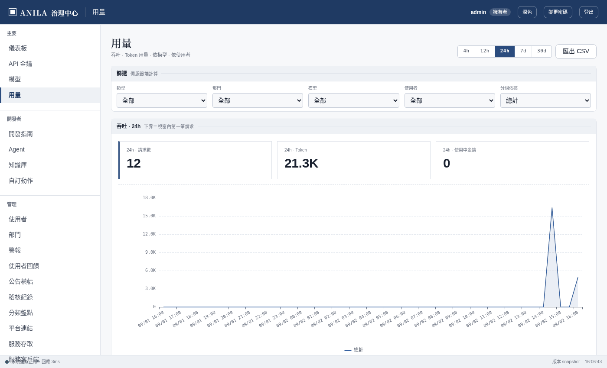
目前的用量不是全貌。 同仁在畫面上聊天（串流）會被完整記錄；但腳本、批次、第三方整合那種非串流呼叫目前不會記到用量。「帳面上沒有」不等於「沒有人在用」。這是已知待補項。
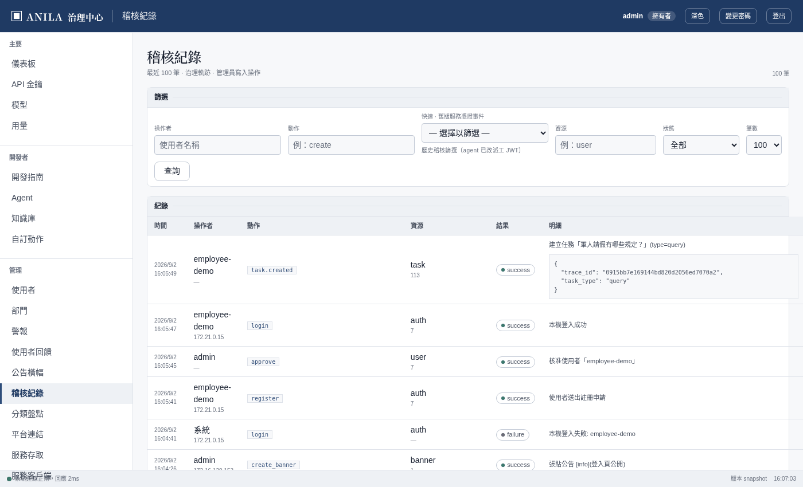
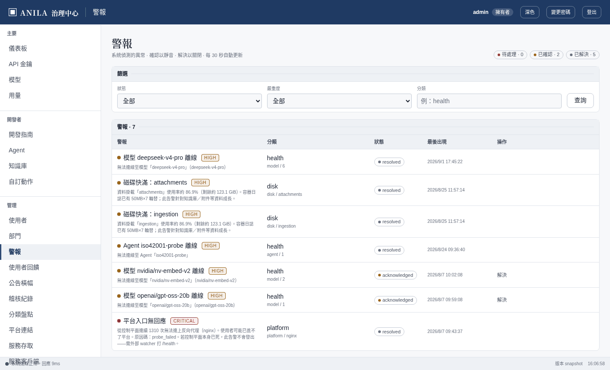
12使用者回饋
治理中心 → 使用者回饋。同仁按的拇指向上／向下與留言都在這裡，預設差評優先。每天早上掃一遍差評與留言，是知道平台哪裡答不好的最快方法。
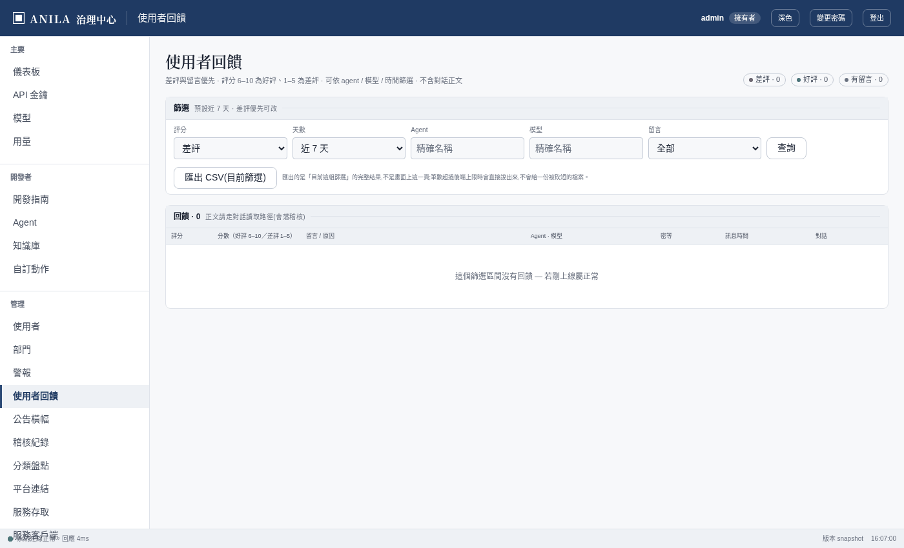
13分類盤點
治理中心 → 分類盤點。各類資料目前的分類等級統計：對話、訊息、知識庫、知識文件、Agent、模型、任務、來源快照各有多少筆在哪個等級。
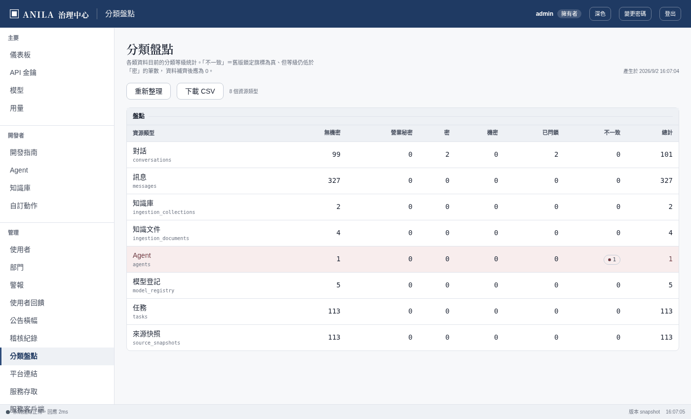
「下載 CSV」給稽核用。
14平台連結與服務存取
治理中心 → 平台連結：登記給同仁使用的服務入口，就是同仁畫面上「專案入口」裡的那些卡片。每項服務可設角色門檻、授權名單、開啟方式（新分頁或內嵌）、分類上限與服務管理員。
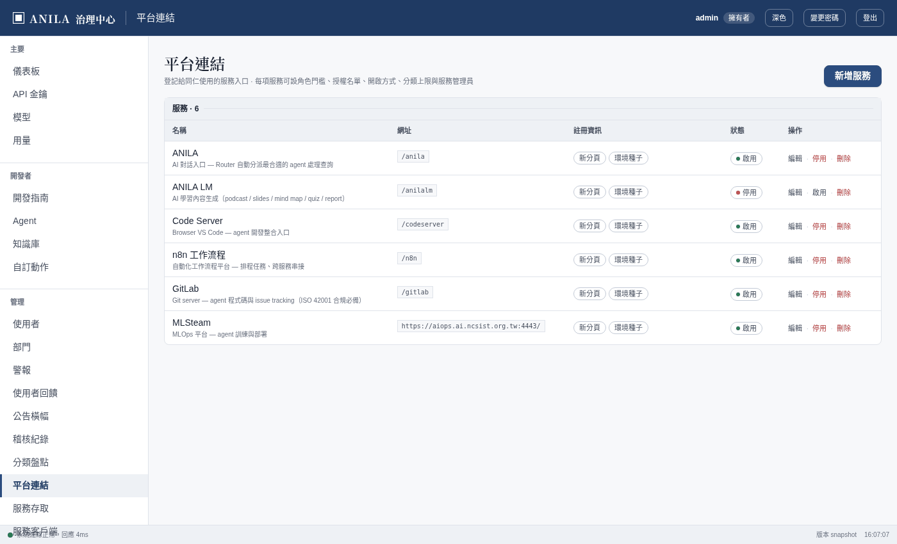
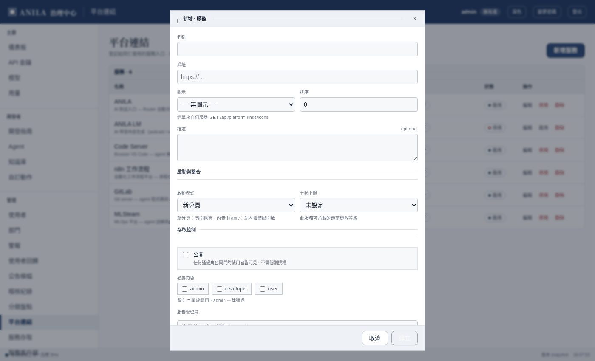
治理中心 → 服務存取：逐一授權哪些使用者或單位可以進入各項服務。角色門檻「開放」的服務不用在這裡授權。
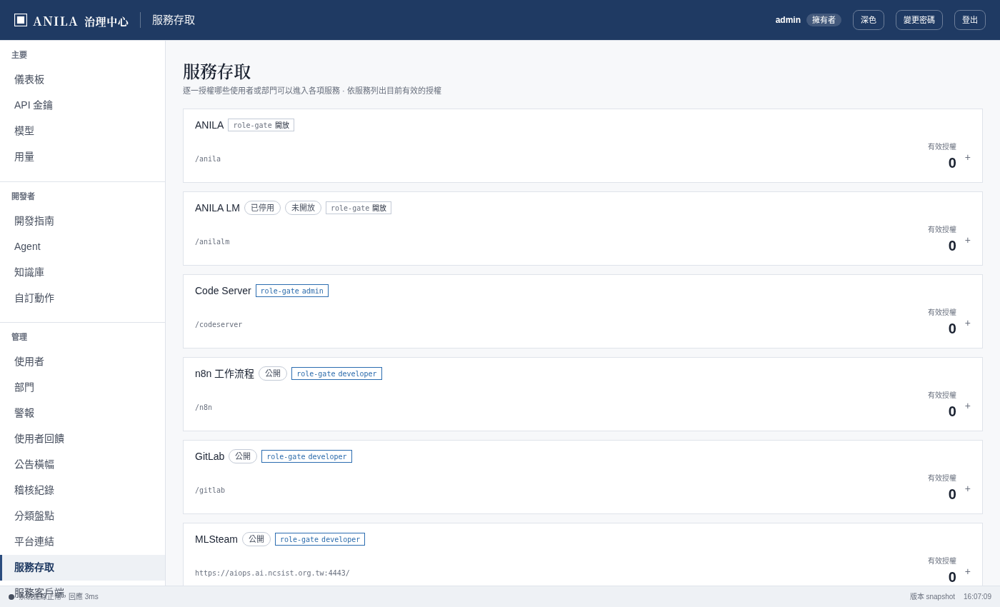
15API 金鑰、服務客戶端、信任主機
這三頁是給整合與維運用的，一般管理不會天天動。
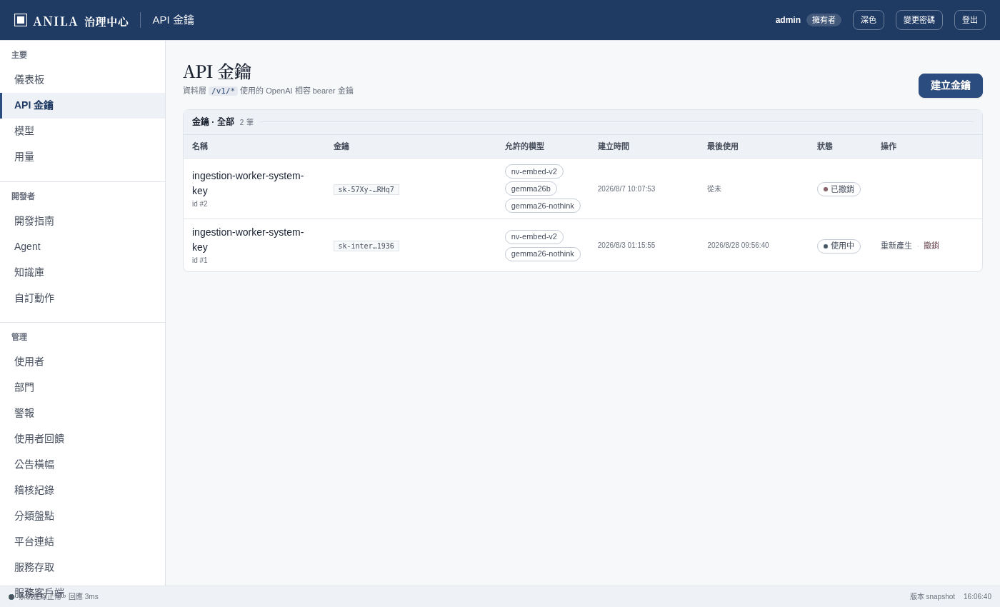
/v1/*）用的金鑰。金鑰只在建立當下顯示一次。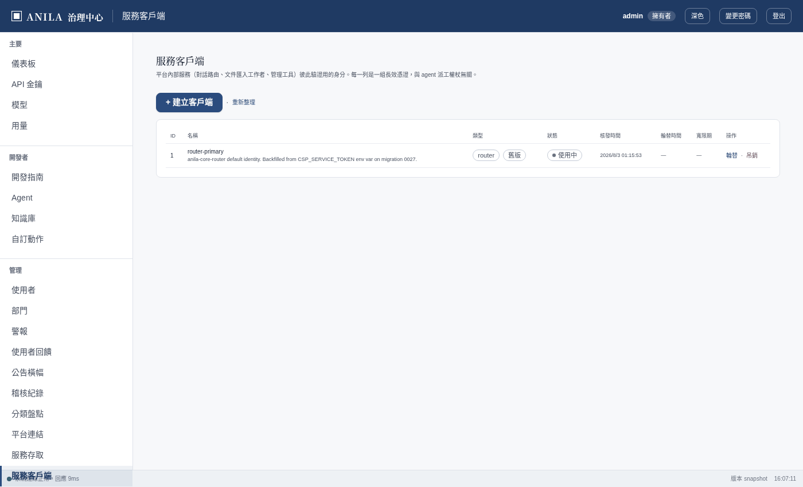
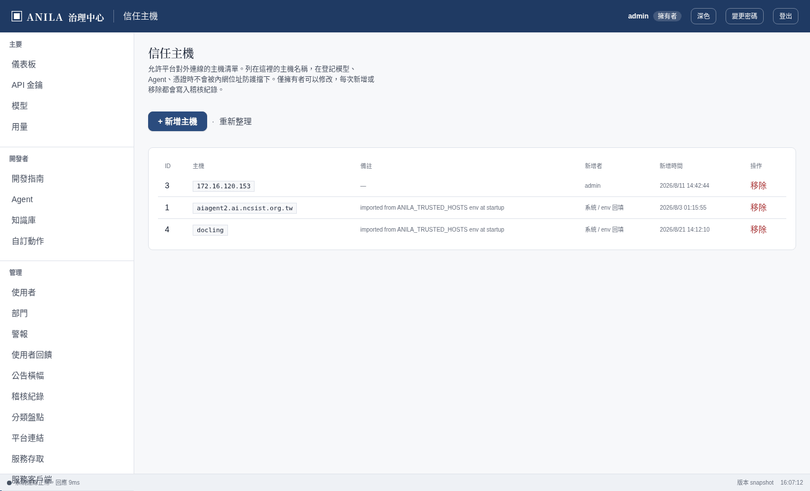
16出事的時候
| 現象 | 先看哪裡 |
|---|---|
| 全站打不開，但容器看起來都正常 | 多半是反向代理指到舊位址。重載代理設定（部署手冊第 9 節）；服務重建之後一定要做這一步。 |
| 同仁說登入不了 | ① 卡片與 PIN；② 本機讀卡元件裝了沒、起了沒（畫面「尚未安裝中華電信本機元件」＝元件問題）；③ 他是不是還沒被核准；④ 單位是不是還沒建。 |
| 問答變慢或失敗 | 治理中心 → 模型，看端點是否健康；儀表板 → 服務健康。 |
| 第一個問題就回「無可用主路由模型」 | 第 5 節，設主路由。 |
| 規章問答不查規章 | 第 6 節，「ANILA 可檢索」沒開。 |
| 同仁說「AI 說它只回答某類問題」 | 那是被呼叫的 agent 自己的拒絕訊息。看該對話的 agent 是哪一個。 |
| 畫面一片空白 | 請同仁硬重新整理（Ctrl+Shift+R）。平台剛更新版本後，還開著的舊分頁點下去會這樣。 |
| 看到「暫時維護中」 | 那個入口目前是刻意關閉的，不是故障。 |
code-server 的密碼等於平台的最高權限。 它掛載的是可寫的整包專案原始碼、未遮蔽的機密目錄，以及 Docker 控制通道。那把密碼只能給平台管理員。
17卡登壞掉時的後路（破窗）
先確認你真的需要它。 這條路只有平台擁有者用得成，而且只在卡片登入本身失效時使用：憑證鏈換過、CA 過期、讀卡元件掛掉。一般的「某個人登不進來」不要用這條，那是核准或單位的問題（第 4 節）。
做法：在登入頁網址後面加上參數 ?show_alternatives=1，平時隱藏的「其他登入方式」區塊會出現，用擁有者帳號密碼登入。

/login?show_alternatives=1。黃框那句提示會明講這條只給擁有者。- 那個參數只是把畫面顯示出來，不是鑰匙。後端仍然只放行擁有者帳號，其他人填了帳密照樣進不來。所以它不是祕密，但也不必公告。
- 擁有者的密碼在部署當天由腳本產生並要求存入密碼管理器。部署後改
.env裡的密碼不會改到資料庫，要改密碼用治理中心 → 使用者 → 重設密碼。 - 平時那塊是刻意隱藏的。 如果你在沒有加參數的情況下看到帳號密碼欄位，表示這台不是「卡登唯一入口」模式，那在正式部署上是不對的，請檢查部署設定。